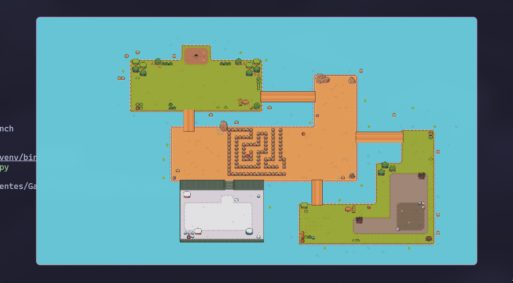
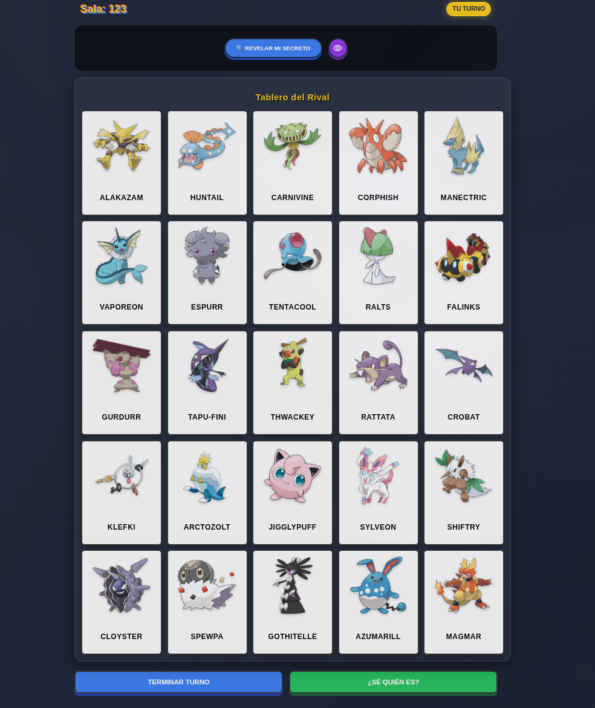

ENGINEERING
THEFUTURE
Ingeniero de Software especializado en el desarrollo de arquitecturas backend robustas, integración estratégica de IA y aseguramiento de infraestructuras críticas.
Identity Verified
Software Engineer
BEYOND THE
CODE.
Ingeniero enfocado en la entrega de soluciones tecnológicas de alto impacto y la optimización de procesos críticos. Mi trayectoria destaca por la capacidad de transformar desafíos técnicos complejos en sistemas funcionales, escalables y seguros, con un dominio profundo del ecosistema Linux y el desarrollo Backend.
Mi visión se centra en la excelencia técnica y la innovación constante. Busco integrar equipos de ingeniería donde la robustez del código y la integridad de la arquitectura sean los pilares fundamentales, aportando una mentalidad analítica para escalar sistemas empresariales.
Security & Logic
Cifrado extremo y protocolos seguros.
Performance
Optimización y baja latencia.
EXPERIENCIA
PROFESIONAL
Analista en Tecnologías de Operación
PEMEX
Liderazgo técnico en la automatización de procesos operativos y analítica avanzada para tecnologías de operación.
Logros e Impacto Operativo
Inteligencia Artificial y Automatización
Establecí flujos de notificación autónomos integrando modelos de IA locales con servidores de correo, implementando pipelines de orquestación en n8n.
Análisis de Datos (BI)
Optimicé la visibilidad de métricas operativas al consolidar múltiples fuentes de datos en tiempo real mediante la construcción de dashboards interactivos en Power BI.
Desarrollo Backend
Reduje significativamente la captura manual de información departamental desarrollando y desplegando scripts personalizados en Python.
PROYECTOS
DESTACADOS



MAESTRÍA TÉCNICA
Un stack tecnológico diseñado para la eficiencia, la seguridad y la escalabilidad.
Motor Backend
Desarrollo de lógica de servidor robusta y sistemas de alta disponibilidad.
Datos & Análisis
Gestión avanzada de persistencia y visualización estratégica de datos.
Infraestructura
Entornos virtualizados y automatización de despliegues.
Arquitectura & Patrones
Diseño de software escalable basado en estándares industriales.
Diseño de Interfaces
Creación de experiencias de usuario modernas y reactivas.
FORMACIÓN &
CREDENCIALES
Maestría en Dirección de Proyectos
UNITEC Campus Atizapán
Especialización enfocada en metodologías de gestión ágil, control de presupuestos, gestión del alcance y dirección de equipos multidisciplinarios para el éxito de iniciativas tecnológicas.
Ingeniería en Sistemas Computacionales
UNITEC Campus Atizapán
Graduado con formación de alto nivel enfocada en el ciclo de vida del software, IA aplicada y ciberseguridad avanzada.
Advanced Linux Systems Administration
Hack4u.io
Dominio en gestión de procesos críticos, seguridad SSH y administración de infraestructuras Linux.
Oracle AI Foundations Certification
Oracle
Certificación oficial en pilares de IA y Machine Learning sobre infraestructuras de Oracle Cloud.
Offensive Python Specialist
Hack4u.io
Especialización en herramientas de seguridad ofensiva y protocolos de hacking ético mediante Python.
GitHub Foundations Certification
GitHub
Certificación oficial en administración de repositorios, flujos de trabajo colaborativos y control de versiones profesional con Git y GitHub.
CONECTEMOS
SISTEMAS
Iniciemos una conversación sobre sistemas o arquitectura. El canal está abierto.